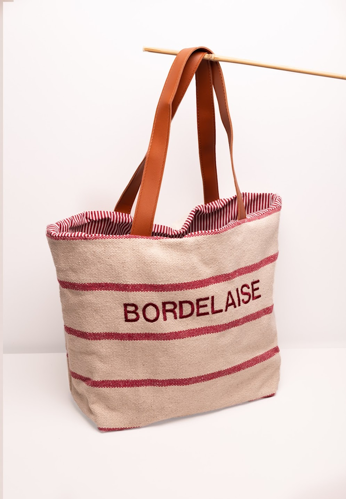
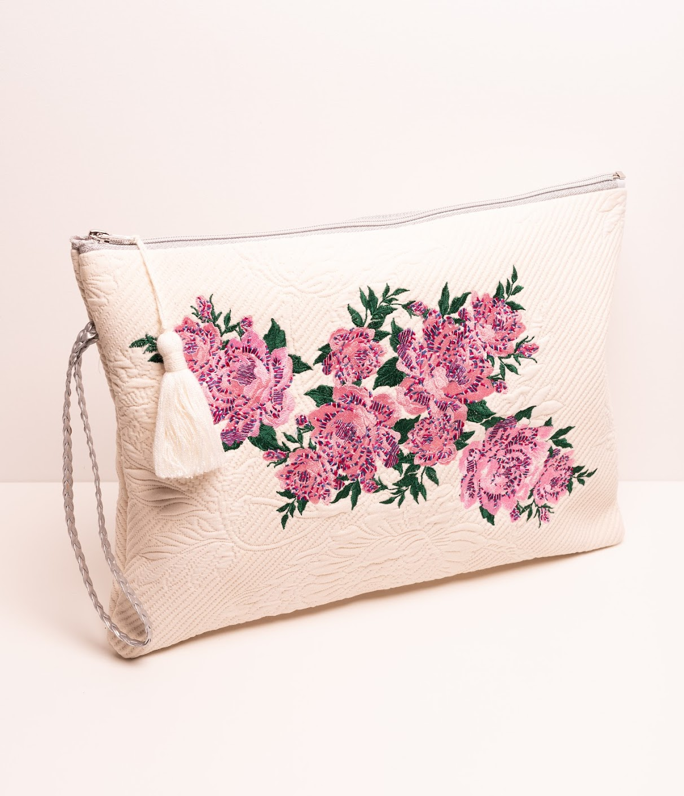

Des sacs, des tot bag, des pochettes il y en pour tout les goûts



Une création unique de sac en tout genre fabriqué par une créatrice bordelaise qui déborde d'imagination fan de la mode
lien siteLudivine Alsters, une créatrice pleine d'originalité et fan de mode. Bordelaise d'adoption depuis 20 ans et originaire de Sanary sur mer, la mode a toujours été sa forme d'expression. Autodidacte, elle a commencé la couture pour personnaliser ses tenues.Parce que tout ce qui est accessoire est nécessaire, elle réalise ses sacs et pochettes. Fort de leur succès, elle souhaite partager ses créations qui rendent les looks uniques !